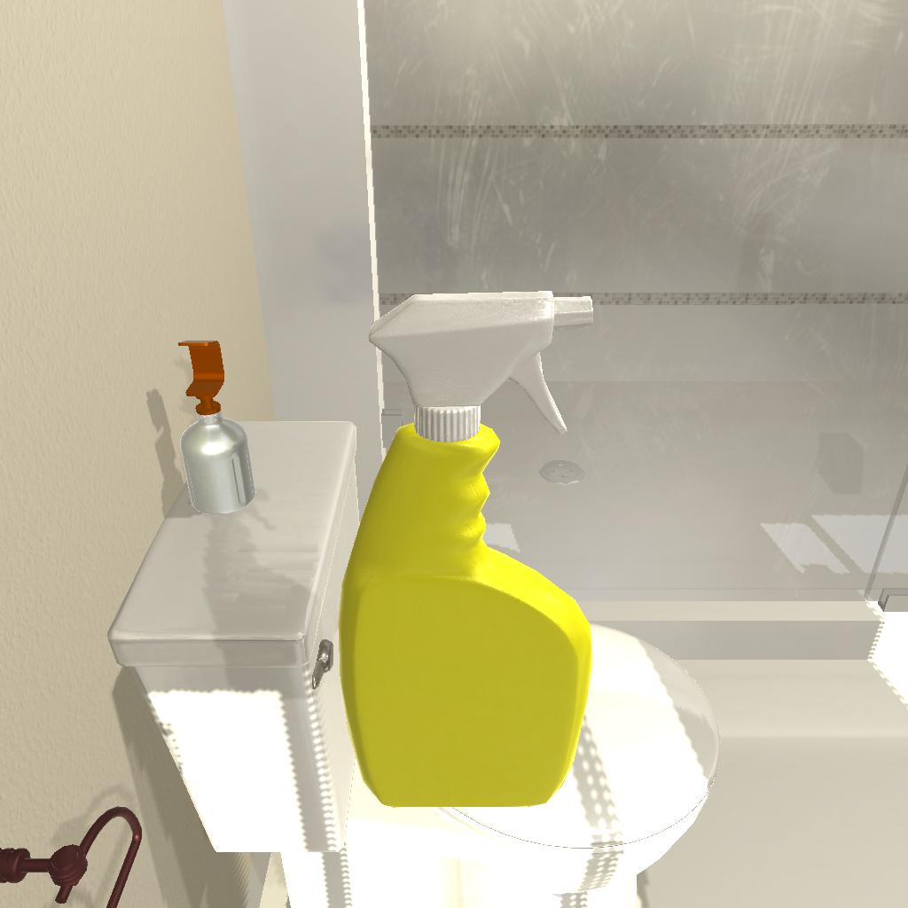

---------------------------------------------------------task: 28---------------------------------------------------------
--------------------------------------------------------------------------------------------------------------------------------------------------------------------
--------------------------------------------------------------------------------------------------------------------------------------------------------------------
Step:--------------------------------------------------------------------------8-------------------------------------------------------------------------------
----------------------------------------
VLM Prompt:
Image1:
Image2:
Image3:
**Instruction**
1. Analyze the provided images to identify all visible household objects and compare the difference between images (e.h. whether the object is opened or not and taken on hand or not), focusing on those relevant to the task description "put two spraybottle in toilet."
2. Use the analysis of images and the task hint "The agent must find an object of the desired type, pick it up, find the correct location to place it, put it down there, then look for another object of the desired type, pick it up, return to previous location, and put it down there with the other object." to answer the question: what is the most reasonable action in the choices for the task description "put two spraybottle in toilet"?
3. Decide and write the answer using the template: The answer is: (i): , where i is the real number. If there is no desired object in images, search every place based on **Initial Observation** to find the object. And if no one is exactly correct, choose a similar answer.
**Initial Observation**
You are in the middle of a room. Looking quickly around you, you can see bathtub (1), bathtubbasin (1), cart (1), sink (1), garbagecan (1), sinkbasin (1), countertop (1), drawer (1-4), toilet (1), toiletpaperhanger (1)
**Answer Choices**
(1): go to bathtub 1
(2): go to bathtubbasin 1
(3): go to cart 1
(4): go to sink 1
(5): go to garbagecan 1
(6): go to sinkbasin 1
(7): go to countertop 1
(8): go to drawer 1
(9): go to drawer 2
(10): go to drawer 3
(11): go to drawer 4
(12): go to toiletpaperhanger 1
(13): take showerdoor 1 from toilet 1
(14): take soapbottle 1 from toilet 1
(15): examine toilet 1
**Answer**
Let's think step by step by following the instructions.
----------------------------------------
----------------------------------------
Original Response:
1. Analyzing the provided images, we can see two bottles present on the toilet tank in all three images. The first bottle is a silver-colored pump bottle, and the second is a yellow spray bottle. There is no visible difference in the state of the objects between the images (e.g., the objects are not opened or taken in hand).
2. Based on the task description "put two spraybottle in toilet," and the hint provided, the most reasonable action would be to find and pick up the yellow spray bottle that is already on the toilet tank and then look for another spray bottle. Since the initial observation mentions various locations but does not specify where another spray bottle is located, we would need to search these locations.
3. Since the yellow spray bottle is already on the toilet and we need to find another one, we must search the places that could potentially have a spray bottle. Among the answer choices, the most likely places to find a spray bottle would be in drawers, on the countertop, or in the cart.
The answer is: (7): go to countertop 1, as it is a common place to keep cleaning supplies, and we might find another spray bottle there to complete the task. If not found there, we would continue searching in the drawers or cart.
----------------------------------------
----------------------------------------
>>> Refine Original VLM Response and Get Pure Action: go to countertop 1, as it is a common place to keep cleaning supplies, and we might find another spray bottle there to complete the task
----------------------------------------
-----------------------------------------------------------------
Running time: 13.530952453613281 seconds
Total Money: 17.74194999999998
-----------------------------------------------------------------
-----------------------------------------------------------------
Text Observation:Nothing happens.
-----------------------------------------------------------------
UNSUCCEED